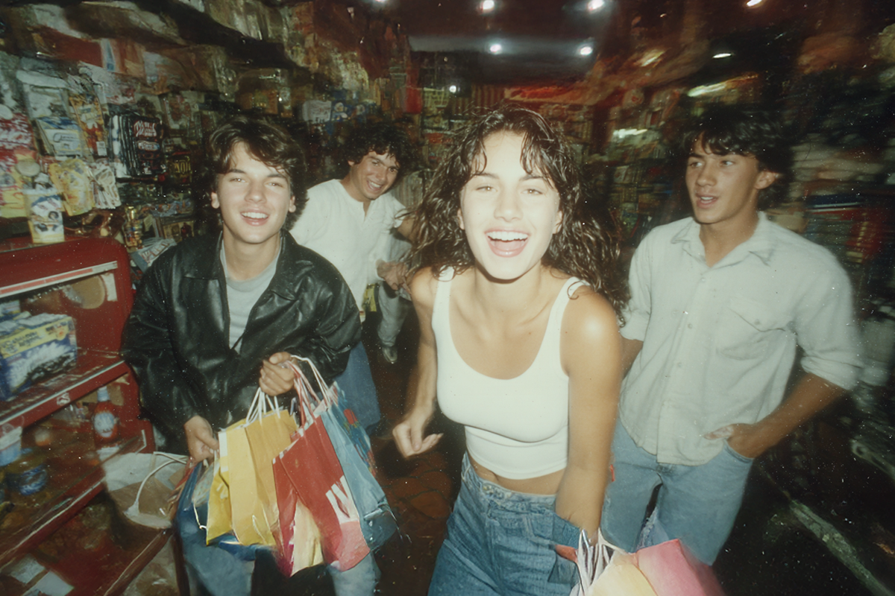
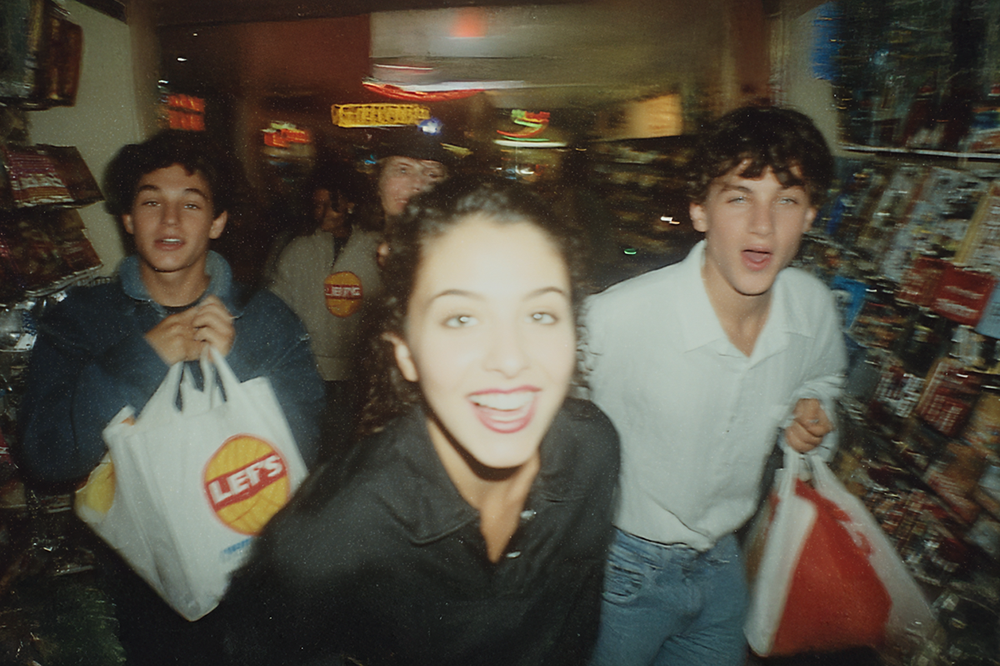

De Levi's a SHEIN
Los gigantes asiáticos están pisando firme en LatAm
Los gigantes asiáticos están pisando firme en LatAm

¿Se acuerdan de la época en que todo lo estadounidense era mejor? En los 70s o 80s, al menos en Chile, la gente se peleaba por quién tenía las últimas “yellow boots” de CAT o Timberland, o por quién llegaba con los jeans Levi 's comprados en algún viaje al extranjero. Ni hablar de cuando esas marcas comenzaron a llegar al país y a los primeros malls como Parque Arauco, era una locura de ventas.
Hoy, ya no queda ni un ápice de eso. Casi todas las marcas internacionales reconocidas están en los malls, y si no lo están, se pueden pedir por internet por múltiples plataformas. Para bien o para mal, se ha democratizado el consumo de ese tipo de marcas.
Y hace un tiempo que ya estamos viviendo un fenómeno distinto: la llegada de los gigantes chinos como Temu, Aliexpress o SHEIN. Entre la controversia, los bajos precios y el impacto ambiental hay un mundo de información. Pero, ¿por qué se ha generado este giro en el consumo?

Con la inflación y las economías no dando abasto, es natural que se generen estos cambios de rumbo en cuanto a los bienes que consumimos. Si antes era ropa estadounidense o producción nacional, hoy los precios están haciendo que la juventud se vuelque mucho más a las páginas web chinas.
Es que estos gigantes chinos hacen una cosa muy bien: la copia. En Aliexpress por ejemplo, puedes encontrar copias o “dupes” de prendas de Zara, exactamente idénticas a las originales. De hecho, hace un tiempo se hizo viral alguien que liberó al proveedor chino de la marca Lululemon. Automáticamente, las ventas cayeron porque la gente comenzó a comprarle al proveedor directamente en SHEIN.
Lo más interesante fue el fenómeno ideológico: en redes sociales se generó una especie de rabia contenida hacia Lululemon por marginar tanto con cada producto. La marca se convirtió en el malo de la película, mientras que TikTok en el “Robin Hood” de la ropa deportiva.
Como es obvio, existe un lado que todos tratamos de evitar ver si compramos en estas tiendas y es el impacto ambiental. En 2023, SHEIN resultó ser la empresa más contaminante a nivel mundial, con hasta 600.000 modelos de prendas en su página y clientes en 220 países.
Desde hace varios años que esta y otras marcas están en la mira de personas y organizaciones internacionales por su poco interés en la sustentabilidad e incluso violaciones a los derechos laborales de trabajadores en sus fábricas chinas.
Es la pregunta que se hacen todos. La verdad es que no tiene una respuesta simple y hay mucha psicología detrás. Está comprobado que la compra se vuelve casi un impulso con precios bajos, sumado a que las redes sociales normalizan este tipo de consumo.
Las dinámicas de las marcas tampoco son inofensivas. TikTok, por ejemplo, ha popularizado los SHEIN hauls, donde un influencer se graba por alrededor de un minuto mostrando un lote de prendas compradas en la app. El precio de un par de jeans de buena calidad, pero distribuido en al menos 20 prendas. También, plataformas como Temu premian a sus usuarios por recomendar la aplicación, generando un efecto viral.
No se trata de satanizar a quienes compran en marcas de “ultra fast fashion” como SHEIN o Temu. Muchas veces es una decisión económica, no ideológica. Pero sí vale la pena preguntarse: ¿podemos tomar decisiones más conscientes, incluso dentro de un sistema que promueve el exceso?
 Finanzas
FinanzasSi últimamente has abierto LinkedIn, probablemente lo has visto: parece que todos hablan del “futuro del trabajo”.
 Finanzas
FinanzasChile no está en el Mundial 2026. Ya lo sabemos, ya dolió, ya hicimos memes tristes y nos resignamos a ver la Copa del Mundo desde la casa.
 Finanzas
FinanzasHace casi dos años me vine a vivir a Italia y llegué con una idea muy instalada en la cabeza: que todo iba a ser mucho más caro que en…